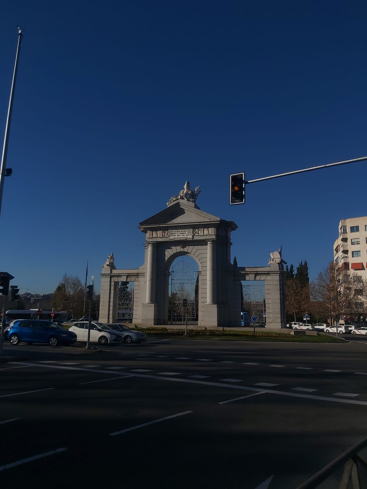
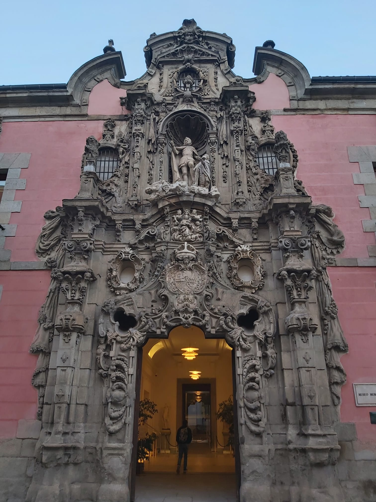

¡Bienvenido a Madrid!
Madrid is de hoofdstad en grootste stad van Spanje, gelegen in het centrum van het land.Het staat bekend om zijn rijke geschiedenis, cultureel erfgoed en levendige sfeer.
Madrid biedt talloze interessante toeristische bezienswaardigheden, die bezoekers uit de hele wereld aantrekken, zoals onder andere:
-
Het Koninklijk Paleis: dit indrukwekkende gebouw was vroeger het verblijf van de Spaanse koningen en is nu opengesteld voor bezoekers.
Het bevat talloze kamers met prachtige meubels en kunstwerken. -
Puerta del Sol: dit bekende plein is het hart van Madrid en het centrumpunt van Spanje.
Het is het startpunt voor de kilometerteller van de Spaanse wegen en wordt omgeven door winkels, restaurants en bars. -
Retiro Park: dit prachtige stadspark biedt een ontspannen omgeving voor bezoekers om te wandelen, te picknicken of te ontspannen.
Het bevat ook verschillende fonteinen, meren en paviljoens.
-
Prado Museum: dit wereldberoemde museum is een must-visit voor kunstliefhebbers.
Het bezit een uitgebreide collectie schilderijen, beeldhouwwerken en andere kunstwerken, waaronder werken van Velázquez, Goya en El Greco.
Met zoveel te zien en te doen in Madrid, is het een populaire bestemming voor toeristen en een bezoek meer dan waard.



Treinreis
Je reist met de hogesnelheidstrein (Franse TGV en Spaanse AVE) aan snelheden tot 320km/h in de richting van Madrid.Na een treinreis van zo'n anderhalve dag kun je al beginnen met het bezoeken van de prachtige Spaanse hoofdstad!
Onderweg heb je een overnachting in Barcelona, Lyon of Parijs, samen zoeken we de beste overnachtingsplaats voor jouw reis!
€1.300 p.p.
prijs op basis van 2 personen
Inbegrepen
- Treinreis heen & terug in 2e klasse
- 4 overnachtingen te Madrid
- 2 overnachtingen onderweg
- Ontbijt
- BTW
Optioneel
- Bijstands- en/of annulatieverzekering
Niet inbegrepen
- Dossierkosten (€10 per boeking)
- Lokale verplaatsingen
- Lokale activiteiten
- Drank en maaltijden (uitg. ontbijt)
Boek deze reis > Nog een vraag >